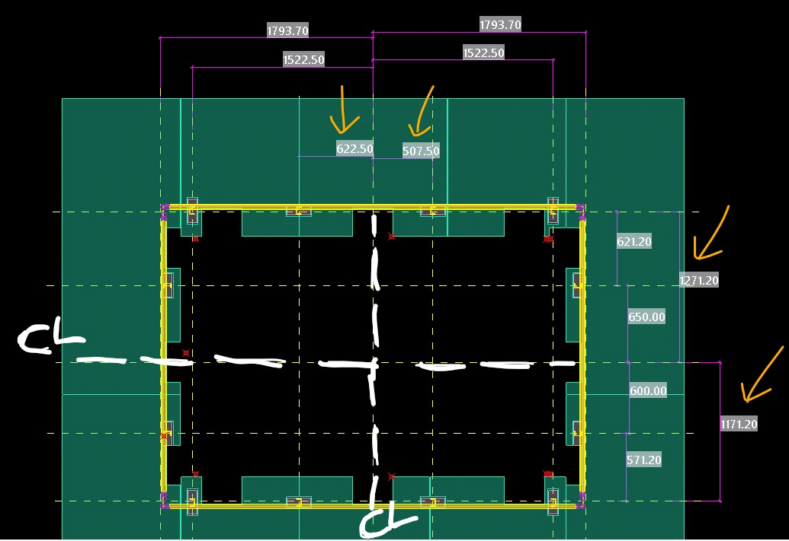

Introduction
In construction detailing, symmetry isn't just aesthetically pleasing, it's a critical factor for efficiency in fabrication and installation. Symmetry here means a balanced arrangement, where railing elements are organized as mirror images along a central line. Proper symmetry ensures a higher number of identical railings, simplifying the workflow.
הקדמה
The Problem
Railings that lack symmetry increase complexity during fabrication and installation. Software alerts like "Part geometry differs or parts are positioned differently in assembly" indicate potential inefficiencies that can be avoided with better attention to symmetry during the detailing process.
הבעיה
Asymmetric Stanchions
For railings with asymmetric profiles like U-shaped stanchions, correct orientation is key. Rotating these parts appropriately can ensure identical railings, minimizing individualized attention and reducing the number of unique drawings necessary for assembly.
עמודונים לא סימטריים
Custom Components
Where feasible, defining a custom component based on the project's railing design can streamline production. This reduces the number of unique fabrication pieces, leading to fewer drawings required for a more efficient workflow.
קומפוננטים מותאמים אישית
Conclusion
Emphasizing symmetry in railing detailing leads to smoother fabrication and onsite installation. By doing so, detailers help optimize both time and resources, ensuring a more organized and cost‑effective construction process.
סיכום
Questions or suggestions? The contact form is open.